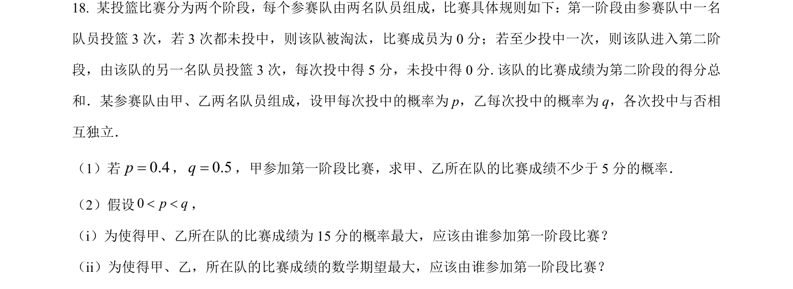
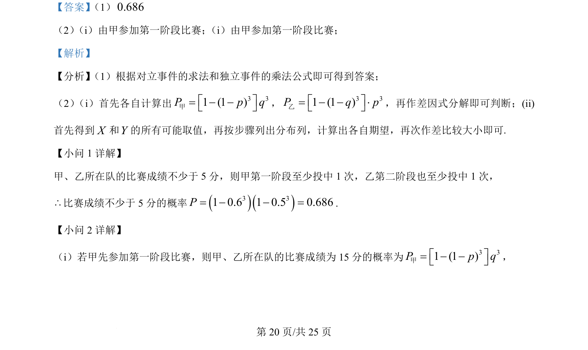
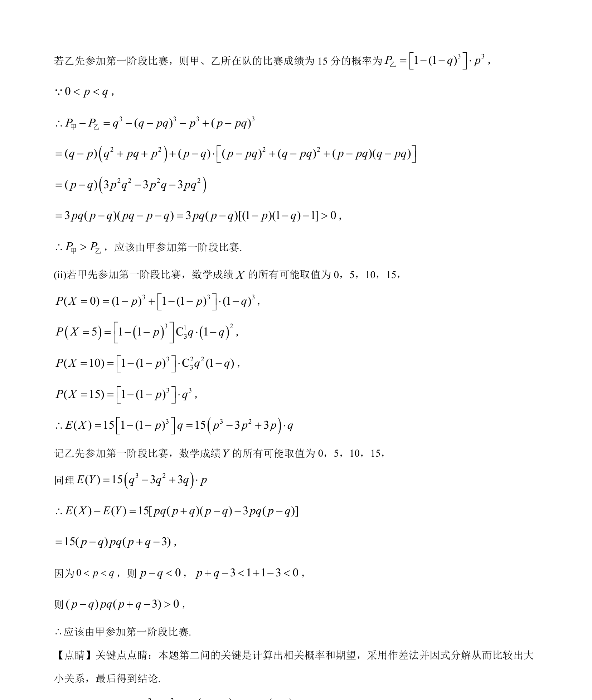

考点：对立事件 独立事件的乘法公式 分布列与期望 作差比较
对立事件
独立事件的乘法公式
分布列与期望
作差比较

本题通过比赛投篮情境考查独立事件概率计算、分布列与期望的求法及作差比较大小。


📄 原 PDF 第 20 页：素材/真题/吉林/2008-2024·（吉林）数学高考真题/2024年高考数学试卷（新课标Ⅱ卷）（解析卷）.pdf
素材/真题/吉林/2008-2024·（吉林）数学高考真题/2024年高考数学试卷（新课标Ⅱ卷）（解析卷）.pdf